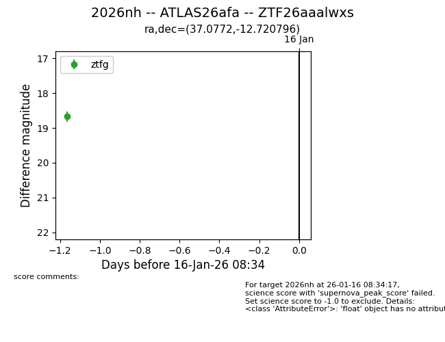
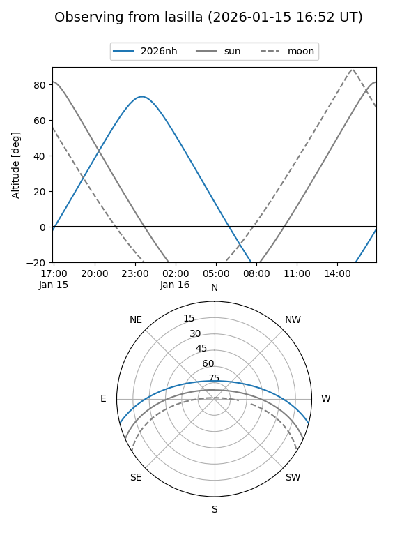
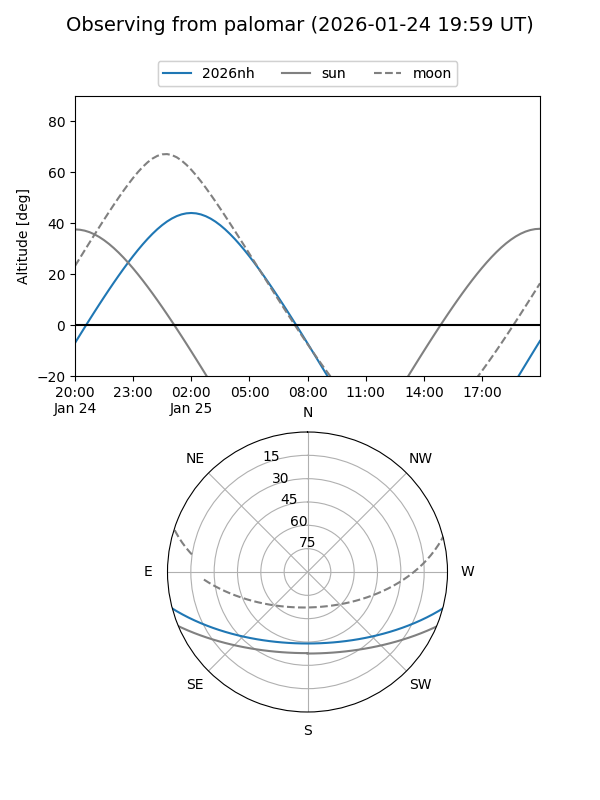
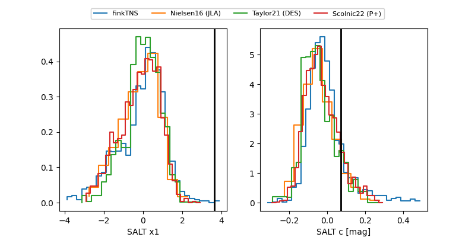

2026nh
Target 2026nh at 2026-01-25 15:31
Aliases and brokers:
FINK: link
Lasair: link
ALeRCE: link
TNS: link
YSE: link
alt names
ZTF26aaalwxs (ztf,fink_ztf)
2026nh (tns,yse)
ATLAS26afa (atlas)
Coordinates:
equatorial (ra, dec) = 37.0772,-12.72080
equatorial (HMS+DMS) = 02:28:18.52,-12:43:14.87
galactic (l, b) = (185.2774,-63.14450)
Flags:
Photometry:
last ztfg=18.56, ztfr=18.62
2 ztfg, 1 ztfr detections
Lightcurve

Visibility


Additional plots
